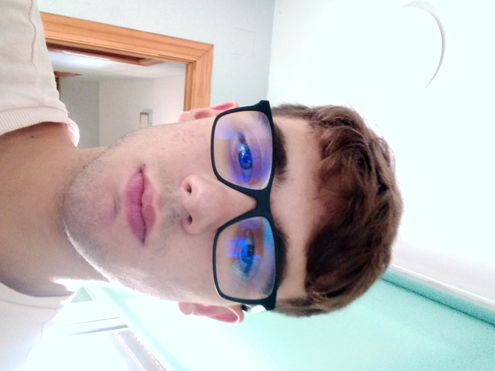

Marc Alonso
Estudiant de desenvolupament d'aplicacions multiplataformes
Sóc un estudiant de grau superior de l'Esteve Terradas del grup de DAW.
Em considero bastant inexpert amb la informàtica.

Habilitats
- Constancia
- Resolució de problemes
- Treball en equip
Objectius
Aprendre a com crear pàgines web- Aprendre el vocabulari de programació (I dominar-lo)
- Aprendre técniques per programar més ràpid